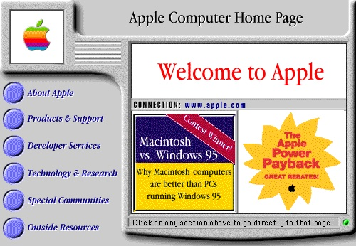

Year 2000 Problem

The year 2000 problem, also known as the Y2K problem, Y2K scare, millennium bug, Y2K bug, Y2K glitch, Y2K error, or simply Y2K refers to potential computer errors related to the formatting and storage of calendar data for dates in and after the year 2000. Many programs represented four-digit years with only the final two digits, making the year 2000 indistinguishable from 1900. Computer systems' inability to distinguish dates correctly had the potential to bring down worldwide infrastructures for industries ranging from banking to air travel.
In the years leading up to the turn of the century (millennium), the public gradually became aware of the "Y2K scare", and individual companies predicted the global damage caused by the bug would require anything between $400 million and $600 billion to rectify. A lack of clarity regarding the potential dangers of the bug led some to stock up on food, water, and firearms, purchase backup generators, and withdraw large sums of money in anticipation of a computer-induced apocalypse.
Contrary to public expectations, few major errors actually occurred in 2000. Supporters of the Y2K remediation effort argued that this was primarily due to the pre-emptive action of many computer programmers and information technology experts. Companies and organizations in some countries, but not all, had checked, fixed, and upgraded their computer systems to address the problem.[3][4] Then-U.S. president Bill Clinton, who organized efforts to minimize the damage in the United States, labeled Y2K as "the first challenge of the 21st century successfully met",[5] and retrospectives on the event typically commend the programmers who worked to avert the anticipated disaster.

Critics pointed out that even in countries where very little had been done to fix software, problems were minimal. The same was true in sectors such as schools and small businesses where compliance with Y2K policies was patchy at best.